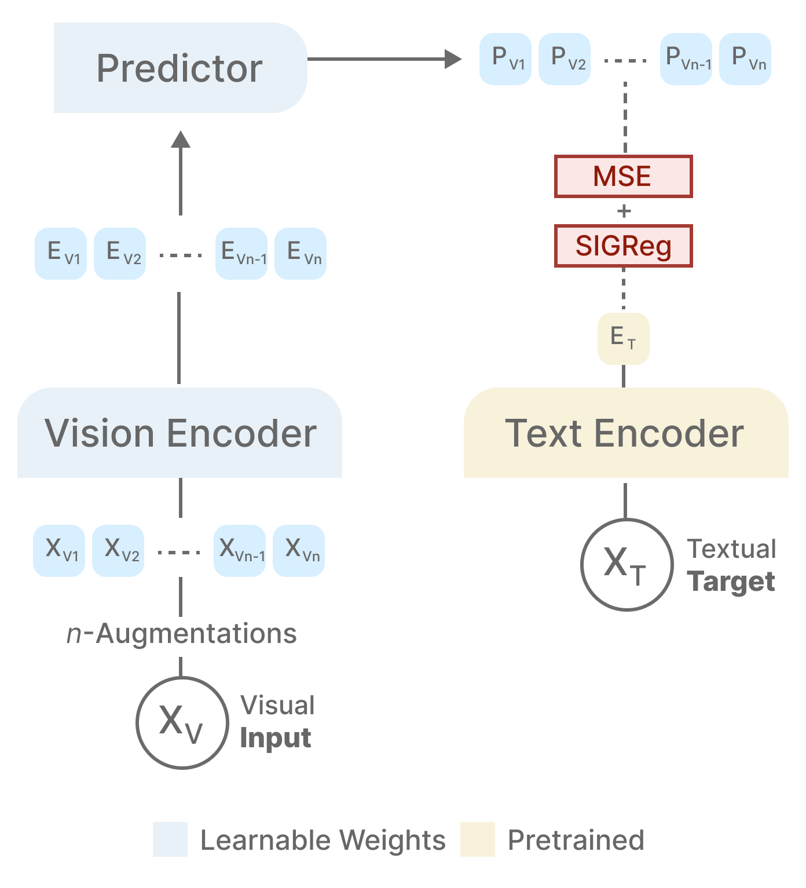
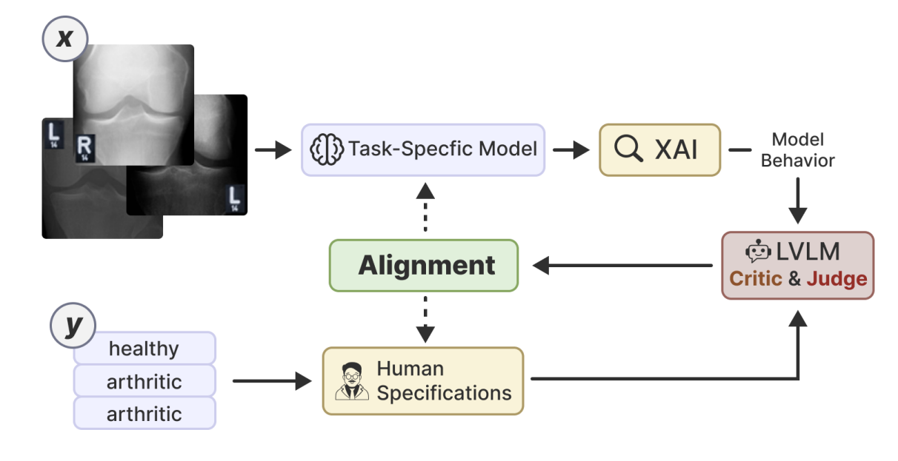
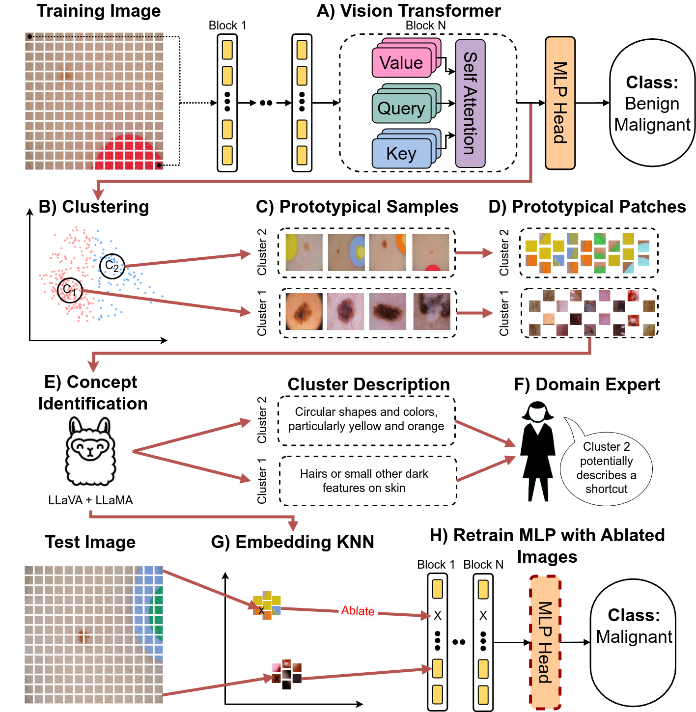
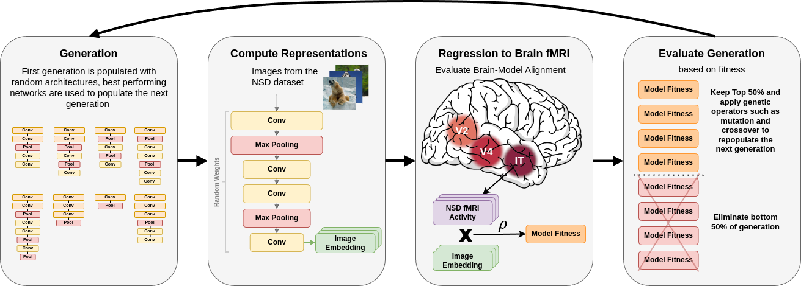
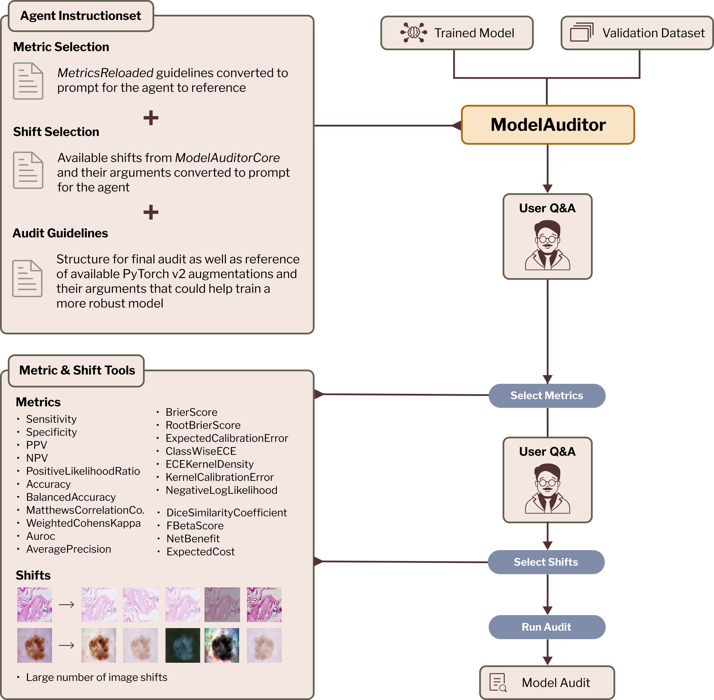
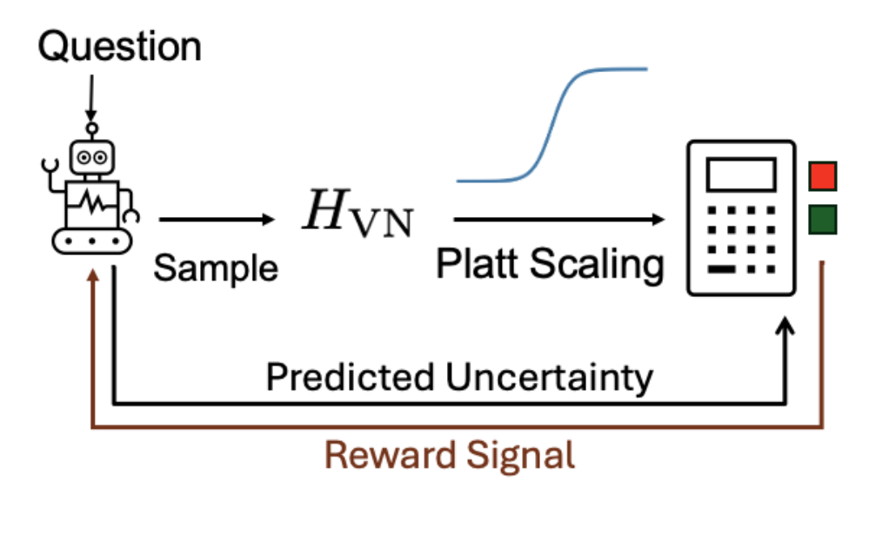
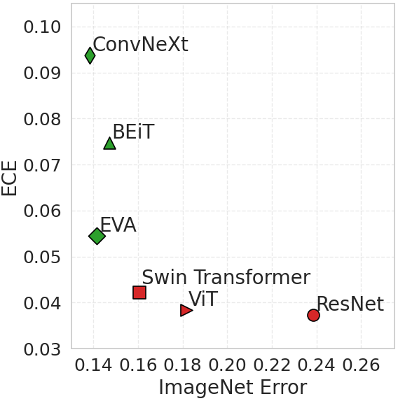

I'm a research scientist at the MLO Lab led by Prof. Dr. Florian Buettner in Frankfurt and a Masters student at Goethe University Frankfurt in AI & Computational Neuroscience.
I believe temporal prediction is a powerful learning signal for building rich, general-purpose representations of the world, and that JEPAs are a promising framework for learning such representations efficiently and at scale. My research focuses on developing novel JEPA architectures and training objectives, investigating their properties and capabilities, and applying them to a range of domains including vision, language, and robotics. Some papers are highlighted.

We introduce NOVA, a non-contrastive vision-language alignment framework based on joint
embedding prediction with distributional regularization. NOVA aligns visual representations
to a frozen text encoder by predicting text embeddings from augmented image views, while
enforcing an isotropic Gaussian structure via SIGReg.

Small vision models in high-stakes domains often learn spurious correlations that don't align with human expertise. LVLM-VA uses large vision-language models as a bridge between domain experts and task-specific models, translating human knowledge into actionable feedback that reduces reliance on spurious features without requiring fine-grained annotations.

By leveraging MLLMs and the representational structure of the Transformer architecture we detect and mitigate shortcuts completely unsupervised.

Optimizing convolutional network architectures for brain-alignment via evolutionary neural architecture search results in models with clear representational hierarchies, surpassing even pretrained classification models on brain-alignment scores.

Multi-agent architecture that generates interpretable reports explaining how much computer vision model performance likely degrades during deployment, discussing specific failure modes and identifying root causes and mitigation strategies.

We introduce a pipeline for post-training language models to efficiently estimate calibrated uncertainty in their responses, combining entropy-based scoring, calibration, and reinforcement learning to improve interpretability and reliability.

Empirical analysis of vision foundation models showing they tend to be underconfident on in-distribution predictions, resulting in higher calibration errors, while demonstrating improved calibration under distribution shifts.
Design after Jon Barron
{kind=link}